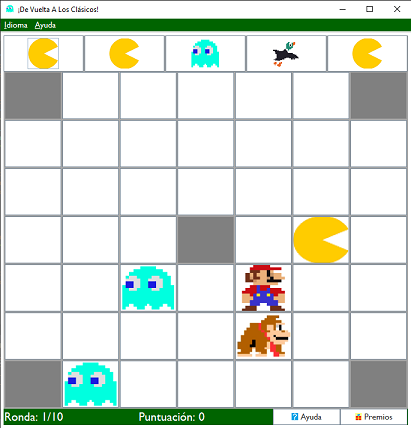

El juego está formado por un tablero de 7x7 y una hilera. Inicialmente aparecen cinco invasores aleatorios en el tablero, los cuales se eliminan cuando el jugador va colocando los invasores de la hilera en el tablero. Las casillas de las esquinas y la central son inaccesibles.
Para eliminar invasores se deben formar colonias (o grupos) de tres o más invasores del mismo tipo, de manera que se gana si se finalizan diez rondas sin llenar todo el tablero o si se forma un grupo mayor de cinco de un invasor particular: El cabecilla.
El invasor cabecilla es el mismo que el icono de la aplicación El Fantasma
El usuario irá acumulando puntos en función del tamaño de las colonias que haga, aunque si los invasores terminan ocupando todo el tablero, el marcador se pondrá a cero y el usuario no podrá acceder a premios.